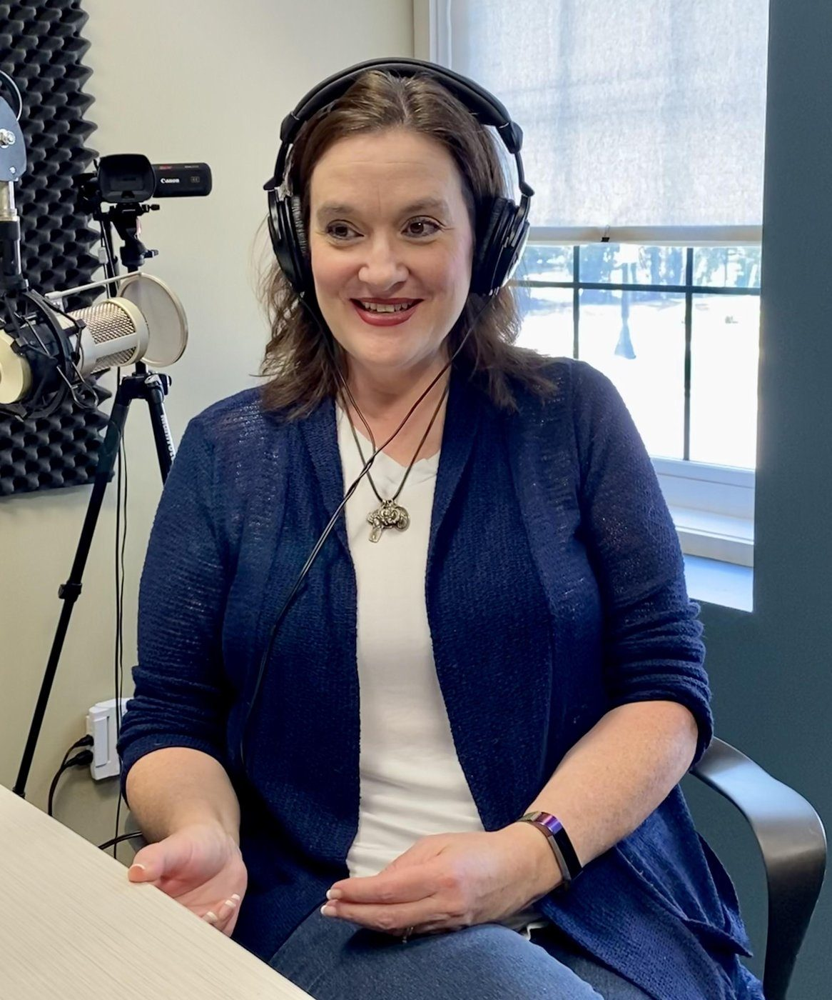
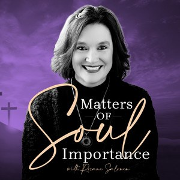

Roxane has been a guest across Catholic television, radio, and podcasts — and an occasional co-host on Real Presence Radio since 2010. A selection of appearances and featured articles.


Roxane hosts conversations on questions of earthly and eternal consequence. Listen to episodes, meet her guests, and subscribe.